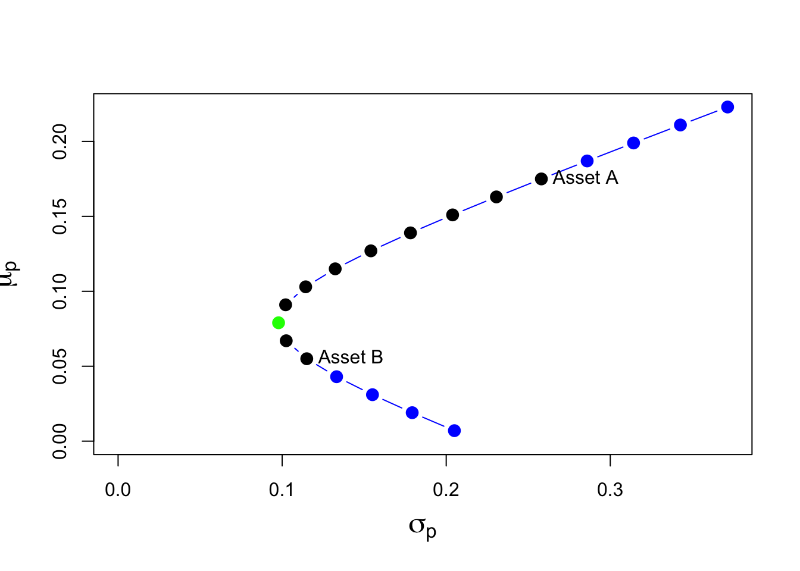
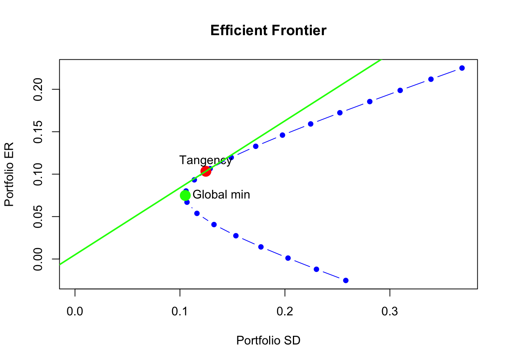

Performance Optimization
Menghan Yuan
April 2, 2024
Portfolio opportunity set
The collection of all feasible investment possibilities set, or portfolio opportunity set, in the case of two assets is simply all possible portfolios that can be formed by varying the portfolio weights such that the weights sum to one.
We summarize the expected return-risk (mean-volatility) properties of the feasible portfolios in a plot with portfolio expected return, \(\mu_p\), on the vertical axis and portfolio standard deviation, \(\sigma_p\), on the horizontal axis.
Recall we have the expected return and variance of the portfolio return as follows:
\[ \begin{aligned} E[r_{p,t}] &= \sum_{i=1}^k w_{i,t} E[r_{i,t}] \\ \text{Var}[r_{p,t}] &= \sum_{i=1}^k\sum_{j=1}^k w_{i,t}\,w_{j,t}\,\text{Cov}(r_{i,t}, r_{j,t}) \end{aligned} \]
Given the following set up for two assets A and B:
| Asset A | Asset B | |
| \(\mu\) | 0.175 | 0.055 |
| \(\sigma\) | 0.258 | 0.115 |
| \(\rho_{AB}\) | -0.164 | |
Equally weighted
First we consider an equally weighted portfolio \(p_1\).
# initialize parameters
mu.A = 0.175
sig.A = 0.258
sig2.A = sig.A^2
mu.B = 0.055
sig.B = 0.115
sig2.B = sig.B^2
rho.AB = -0.164
sig.AB = rho.AB*sig.A*sig.B# equally weighted
x.A = 0.5
x.B = 0.5
mu.p1 = x.A*mu.A + x.B*mu.B
sig2.p1 = x.A^2 * sig2.A + x.B^2 * sig2.B + 2*x.A*x.B*sig.AB
sig.p1 = sqrt(sig2.p1)
data.tbl = t(c(mu.p1=mu.p1, sig.p1=sig.p1, sig.avg=0.5*sig.A+0.5*sig.B))
data.tbl## mu.p1 sig.p1 sig.avg
## [1,] 0.115 0.1323416 0.1865This portfolio has expected return half-way between the expected returns on assets A and B, but the portfolio standard deviation is less than half-way between the asset standard deviations. This reflects risk reduction via diversification.
The equally weighted portfolio has expected return half way between the expected returns on assets A and B, but has standard deviation (volatility) that is less than half way between the standard deviations of the two assets.
For long-only portfolios, we can show that this is a general result as long as the correlation between the two assets is not perfectly positive.
Long-short portfolio
Now we consider a second portfolio \(p_2\) which allows for short selling.
To short an asset one borrows the asset, usually from a broker, and then sells it. The proceeds from the short sale are usually kept on account with a broker and there may be restrictions on the use of these funds for the purchase of other assets. The short position is closed out when the asset is repurchased and then returned to original owner. If the asset drops in value then a gain is made on the short sale and if the asset increases in value a loss is made.
# long-short portfolio
x.A = 1.5
x.B = -0.5
mu.p2 = x.A*mu.A + x.B*mu.B
sig2.p2 = x.A^2 * sig2.A + x.B^2 * sig2.B + 2*x.A*x.B*sig.AB
sig.p2 = sqrt(sig2.p2)
data.tbl = t(c(mu.p2=mu.p2, sig.p2=sig.p2, sig.avg=1.5*sig.A-0.5*sig.B))
data.tbl## mu.p2 sig.p2 sig.avg
## [1,] 0.235 0.4004673 0.3295This portfolio has both a higher expected return and standard deviation than asset A. The high standard deviation is due to the short sale, which is a type of leverage, and the negative correlation between assets A and B.
Leverage refers to an investment that is financed through borrowing. Here, the short sale of asset B produces borrowed funds used to purchase more of asset A. This increases the risk (portfolio standard deviation) of the investment.
Now we calculate the portfolio opportunity set. Here the portfolio weight on asset A, \(x_A\), is varied from \(-0.4\) to \(1.4\) at a step of 0.1 and, since \(x_B=1−x_A\), the weight on asset B then varies from \(1.4\) to \(-0.4\).
x.A = seq(from=-0.4, to=1.4, by=0.1)
x.B = 1 - x.A
mu.p = x.A*mu.A + x.B*mu.B
sig2.p = x.A^2 * sig2.A + x.B^2 * sig2.B + 2*x.A*x.B*sig.AB
sig.p = sqrt(sig2.p)
port.names = paste("portfolio", 1:length(x.A), sep=" ")
data.tbl = as.data.frame(cbind(x.A, x.B, mu.p, sig.p))
rownames(data.tbl) = port.names
col.names = c("$x_{A}$","$x_{B}$", "$\\mu_{p}$", "$\\sigma_{p}$" )
kbl(data.tbl, col.names=col.names) %>%
kable_styling(full_width=FALSE)| \(x_{A}\) | \(x_{B}\) | \(\mu_{p}\) | \(\sigma_{p}\) | |
|---|---|---|---|---|
| portfolio 1 | -0.4 | 1.4 | 0.007 | 0.2049903 |
| portfolio 2 | -0.3 | 1.3 | 0.019 | 0.1792663 |
| portfolio 3 | -0.2 | 1.2 | 0.031 | 0.1550554 |
| portfolio 4 | -0.1 | 1.1 | 0.043 | 0.1331855 |
| portfolio 5 | 0.0 | 1.0 | 0.055 | 0.1150000 |
| portfolio 6 | 0.1 | 0.9 | 0.067 | 0.1024794 |
| portfolio 7 | 0.2 | 0.8 | 0.079 | 0.0978237 |
| portfolio 8 | 0.3 | 0.7 | 0.091 | 0.1021143 |
| portfolio 9 | 0.4 | 0.6 | 0.103 | 0.1143487 |
| portfolio 10 | 0.5 | 0.5 | 0.115 | 0.1323416 |
| portfolio 11 | 0.6 | 0.4 | 0.127 | 0.1540890 |
| portfolio 12 | 0.7 | 0.3 | 0.139 | 0.1782216 |
| portfolio 13 | 0.8 | 0.2 | 0.151 | 0.2038943 |
| portfolio 14 | 0.9 | 0.1 | 0.163 | 0.2305932 |
| portfolio 15 | 1.0 | 0.0 | 0.175 | 0.2580000 |
| portfolio 16 | 1.1 | -0.1 | 0.187 | 0.2859111 |
| portfolio 17 | 1.2 | -0.2 | 0.199 | 0.3141923 |
| portfolio 18 | 1.3 | -0.3 | 0.211 | 0.3427518 |
| portfolio 19 | 1.4 | -0.4 | 0.223 | 0.3715255 |
Portfolios 1-4 and 16-19 are the long-short portfolios and portfolios 5-15 are the long-only portfolios.
The risk-return properties of this set of feasible portfolios can be visualized using:
# mu.p ~ sig.p scatter
cex.val = 1.5
col_vec = c(rep("blue", 4), rep("black", 2),
"green", rep("black", 8), rep("blue", 4))
plot(sig.p, mu.p, type="b", pch=16, cex=cex.val,
ylim=c(0, max(mu.p)), xlim=c(0, max(sig.p)),
xlab=expression(sigma[p]), ylab=expression(mu[p]),
cex.lab=1.5, col=col_vec)
text(x=sig.A, y=mu.A, labels="Asset A", pos=4)
text(x=sig.B, y=mu.B, labels="Asset B", pos=4)
- The black dots plus the green dot represent the long-only portfolios;
- The black dot labeled “Asset A” is the portfolio which invests \(100\%\) in asset A, i.e., (\(x_A=1, x_B=0\));
- The black dot labeled “Asset B” is the portfolio which invests \(100\%\) in asset B, i.e., (\(x_A=0, x_B=1\));
- The blue dots represent long-short portfolios;
- The green dot represents the global minimum variance portfolio (GMV). This portfolio has the property that it has the smallest variance/volatility among all feasible portfolios.
Global minimum variance portfolio
Computing the global minimum variance portfolio is a constrained optimization problem:
\[ \begin{align*} \underset{x_{A},x_{B}}{\min}\sigma_{p}^{2} & =x_{A}^{2}\sigma_{A}^{2}+x_{B}^{2}\sigma_{B}^{2}+2x_{A}x_{B}\sigma_{AB}\\ ~s.t.~x_{A}+x_{B} & =1. \end{align*} \]
This constrained optimization problem can be solved using two methods analytically.
The first method, called the method of substitution, uses the constraint to substitute out one of the variables to transform the constrained optimization problem in two variables into an unconstrained optimization problem in one variable. \[ \min_{x_{A}}\sigma_{p}^{2}=x_{A}^{2}\sigma_{A}^{2}+(1-x_{A})^{2}\sigma_{B}^{2}+2x_{A}(1-x_{A})\sigma_{AB}. \]
Apply the first order condition to solve the unconstrained optimization problem.
\[ 0=\frac{d\sigma_{p}^{2}}{dx_{A}}=2x_{A}^{\min}\sigma_{A}^{2}-2(1-x_{A}^{\min})\sigma_{B}^{2}+2\sigma_{AB}(1-2x_{A}^{\min}). \]
We have the asset allocation for GMV portfolio:
\[ \begin{align} x_{A}^{\min} &= \frac{\sigma_{B}^{2}-\sigma_{AB}}{\sigma_{A}^{2}+\sigma_{B}^{2}-2\sigma_{AB}}, \label{eq:gmv} \tag{1} \\ x_{B}^{\min} &= 1-x_{A}^{\min}. \end{align} \]
The second method, called the method of Lagrange multipliers, introduces an auxiliary variable called the Lagrange multiplier and transforms the constrained optimization problem in two variables into an unconstrained optimization problem in three variables.
The Lagrangian function is formed by adding to \(\sigma_p^2\) the homogenous constraint multiplied by an auxiliary variable \(\lambda\) (the Lagrange multiplier) giving:
\[ L(x_{A},x_{B},\lambda)=x_{A}^{2}\sigma_{A}^{2}+x_{B}^{2}\sigma_{B}^{2}+2x_{A}x_{B}\sigma_{AB}+\lambda(x_{A}+x_{B}-1). \]
The shape of the investment possibilities set is very sensitive to the correlation between assets \(A\) and \(B\) given the other parameters. The following figure shows the portfolio frontiers for \(\rho_{AB}=-0.9, -0.5, 0, 0.5, 0.9\).
- The closer \(\rho_{AB}\) is to \(-1\) the more curved is the frontier toward the y-axis and the higher is the possible diversification benefit.
- There is noticeable curvature even for positive values of \(\rho_{AB}\).
- If \(\rho_{AB}=1\), then the portfolio frontier approaches a straight line connecting assets A and B.
- If \(\rho_{AB}=-1\), there exists a portfolio of A and B that has positive expected return and zero variance. Meaning arbitrage oppotunity.
- Efficient portfolios are the feasible portfolios that have the highest expected return for a given level of risk as measured by portfolio standard deviation.
- Inefficient portfolios are the portfolios such that there is another feasible portfolio that has the same risk but with a lower expected return.
Tangent portfolio
Tangent/optimal portfolio represents the portfolio which maximizes Sharpe ratio.
We can determine the proportions of each asset in the tangency portfolio by finding the values of \(x_A\) and \(x_B\) that maximize the Sharpe ratio of a portfolio.
Formally, we solve the constrained maximization problem:
\[ \begin{align*} \underset{x_{A},x_{B}}{\max}~\mathrm{SR}_{p} &= \frac{\mu_{p}-r_{f}}{\sigma_{p}}~s.t.\\ \mu_{p} & =x_{A}\mu_{A}+x_{B}\mu_{B},\\ \sigma_{p}^{2} & =x_{A}^{2}\sigma_{A}^{2}+x_{B}^{2}\sigma_{B}^{2}+2x_{A}x_{B}\sigma_{AB},\\ 1 & =x_{A}+x_{B}. \end{align*} \] The solution to this optimization problem is:
\[ \begin{align} x_{A}^{tan} & =\frac{(\mu_{A}-r_{f})\sigma_{B}^{2}-(\mu_{B}-r_{f})\sigma_{AB}}{(\mu_{A}-r_{f})\sigma_{B}^{2}+(\mu_{B}-r_{f})\sigma_{A}^{2}-(\mu_{A}-r_{f}+\mu_{B}-r_{f})\sigma_{AB}},\label{eq:tangency-port} \tag{2}\\ x_{B}^{tan} & =1-x_{A}^{tan}.\nonumber \end{align} \]
Portfolio optimization with IntroCompFinR
To create an equally weighted portfolio use:
library(IntroCompFinR)
mu.vec <- c(mu.A, mu.B)
sigma2.mat <- matrix(c(sig2.A, sig.AB^2, sig.AB^2, sig2.B), ncol=2)
k <- 2 # number of assets
ew <- rep(1,k)/k
equalWeight.portfolio <- getPortfolio(er=mu.vec, cov.mat=sigma2.mat, weights=ew)
equalWeight.portfolio## Call:
## getPortfolio(er = mu.vec, cov.mat = sigma2.mat, weights = ew)
##
## Portfolio expected return: 0.115
## Portfolio standard deviation: 0.1412766
## Portfolio weights:
## [1] 0.5 0.5The global minimum variance portfolio (allowing for short sales) is computed using:
gmin.port <- globalMin.portfolio(mu.vec, sigma2.mat)
gmin.port## Call:
## globalMin.portfolio(er = mu.vec, cov.mat = sigma2.mat)
##
## Portfolio expected return: 0.07486614
## Portfolio standard deviation: 0.1050691
## Portfolio weights:
## [1] 0.1656 0.8344- If short sales are not allowed, then set
shorts = TRUE.
You can compute the portfolio with a target expected return.
target.return <- mu.vec[1]
e.port.target <- efficient.portfolio(mu.vec, sigma2.mat, target.return)
e.port.target## Call:
## efficient.portfolio(er = mu.vec, cov.mat = sigma2.mat, target.return = target.return)
##
## Portfolio expected return: 0.175
## Portfolio standard deviation: 0.258
## Portfolio weights:
## [1] 1 0The tangency portfolio can be computed as:
r.f <- .005
tan.port <- tangency.portfolio(mu.vec, sigma2.mat, risk.free = r.f)
tan.port## Call:
## tangency.portfolio(er = mu.vec, cov.mat = sigma2.mat, risk.free = r.f)
##
## Portfolio expected return: 0.1034
## Portfolio standard deviation: 0.1246921
## Portfolio weights:
## [1] 0.4033 0.5967The function efficient.frontier() constructs the set of efficient portfolios.
ef <- efficient.frontier(mu.vec, sigma2.mat, alpha.min=-0.5,
alpha.max=2, nport=20)
summary(ef)## $call
## efficient.frontier(er = mu.vec, cov.mat = sigma2.mat, nport = 20,
## alpha.min = -0.5, alpha.max = 2)
##
## $er
## port 1 port 2 port 3 port 4 port 5 port 6
## 0.225066930 0.211891422 0.198715914 0.185540406 0.172364898 0.159189391
## port 7 port 8 port 9 port 10 port 11 port 12
## 0.146013883 0.132838375 0.119662867 0.106487360 0.093311852 0.080136344
## port 13 port 14 port 15 port 16 port 17 port 18
## 0.066960836 0.053785328 0.040609821 0.027434313 0.014258805 0.001083297
## port 19 port 20
## -0.012092210 -0.025267718
##
## $sd
## port 1 port 2 port 3 port 4 port 5 port 6 port 7 port 8
## 0.3687406 0.3391362 0.3098059 0.2808355 0.2523492 0.2245311 0.1976636 0.1721924
## port 9 port 10 port 11 port 12 port 13 port 14 port 15 port 16
## 0.1488358 0.1287500 0.1136822 0.1057985 0.1067032 0.1161913 0.1324306 0.1532903
## port 17 port 18 port 19 port 20
## 0.1771455 0.2029428 0.2300295 0.2580000
##
## $weights
## [,1] [,2]
## port 1 1.41722441 -0.41722441
## port 2 1.30742851 -0.30742851
## port 3 1.19763262 -0.19763262
## port 4 1.08783672 -0.08783672
## port 5 0.97804082 0.02195918
## port 6 0.86824492 0.13175508
## port 7 0.75844902 0.24155098
## port 8 0.64865313 0.35134687
## port 9 0.53885723 0.46114277
## port 10 0.42906133 0.57093867
## port 11 0.31926543 0.68073457
## port 12 0.20946953 0.79053047
## port 13 0.09967364 0.90032636
## port 14 -0.01012226 1.01012226
## port 15 -0.11991816 1.11991816
## port 16 -0.22971406 1.22971406
## port 17 -0.33950996 1.33950996
## port 18 -0.44930586 1.44930586
## port 19 -0.55910175 1.55910175
## port 20 -0.66889765 1.66889765
##
## attr(,"class")
## [1] "summary.Markowitz"Use the plot() function to create a simple plot the efficient frontier:
plot(ef, plot.assets=T, col="blue", pch=16)
points(gmin.port$sd, gmin.port$er, col="green", pch=16, cex=2)
text(gmin.port$sd, gmin.port$er, labels = "Global min", pos = 4)
points(tan.port$sd, tan.port$er, col="red", pch=16, cex=2)
text(tan.port$sd, tan.port$er, labels = "Tangency", pos = 3)
sr.tan = (tan.port$er - r.f)/tan.port$sd
abline(a=r.f, b=sr.tan, col="green", lwd=2)
Exercise
Annual estimates of the GWN model parameters for Boeing and Microsoft are given in the table below:
| Boeing | Microsoft | |
| \(\mu\) | 0.149 | 0.331 |
| \(\sigma^2\) | 0.069 | 0.136 |
| \(\rho\)(Boeing, Microsoft) | -0.008 | |
Use an annual risk-free rate of \(3\%\) per year for the T-bill (risk free rate).
Create the following portfolios.
Combinations of Boeing and Microsoft (with \(x_{boeing}= −1, −0.9, \ldots, 2\) and \(x_{msft}= 1−x_{boeing}\))
Combinations of Boeing and T-bills (with \(x_{boeing}=0,0.1,\ldots,2\))
Combinations of Microsoft and T-bills (with \(x_{msft}=0,0.1,\ldots,2\)) For each portfolio, compute \(E(r_p)\), \(\text{Var}(r_p)\) and \(\text{SD}(r_p)\)
For each portfolio, plot \(E(r_p)\) vs. \(\text{SD}(r_p)\)
Compute the Sharpe’s slope for Boeing and Microsoft. Which asset has the highest slope value?
Compute the global minimum variance portfolio (GMV).
Compute the weights of Boeing and Microsoft in the GMV portfolio using the analytical formula \(\eqref{eq:gmv}\) and cross validate your results using the
globalMin.portfoliofunction.Compute \(E(r_p)\), \(\text{Var}(r_p)\) and \(\text{SD}(r_p)\) for the GMV portfolio.
Compute Sharpe’s slope to the ope for the GMV portfolio.
Compute the tangency portfolio.
Compute the weights of Boeing and Microsoft in the tangency portfolio using the analytical formula \(\eqref{eq:tangency-port}\) and cross validate your results using the
tangency.portfoliofunction.Compute \(E(r_p)\), \(\text{Var}(r_p)\) and \(\text{SD}(r_p)\) for the tangency portfolio.
Compute Sharpe’s slope for the tangency portfolio.